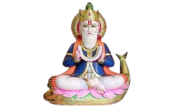

Welcome to SindhiSpark
SindhiSpark is a youth-led initiative dedicated to preserving, celebrating, and reimagining Sindhi heritage for future generations.
Through culture, storytelling, literature, music, traditions, and youth voices, we aim to reconnect Sindhis across the world with the spirit, values, and legacy of Sindh.
Jeko chavando Jhulelal
Tanhija thenda bera paar
Aayo Laal Jhulelal
Lal ja jati chavo Jhulelal

Why SindhiSpark?
Around the world, countless young Sindhis are growing up far from the language, stories, and traditions that shaped previous generations.
SindhiSpark was created to bridge that gap — bringing together culture, heritage, community, and youth in one digital space.
Preserve the Past. Empower the Present. Inspire the Future.